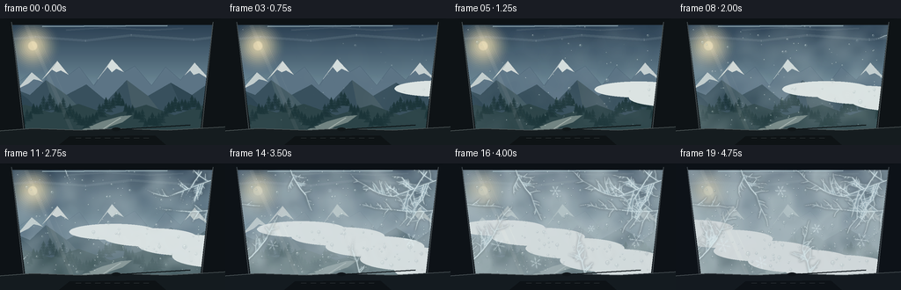
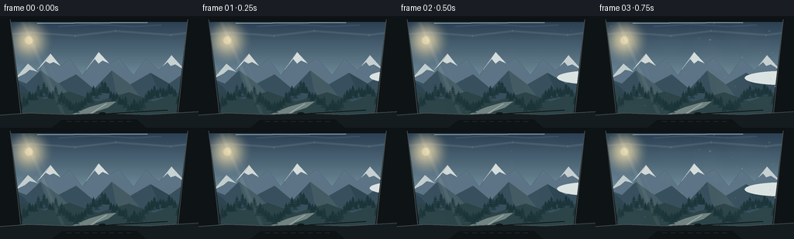
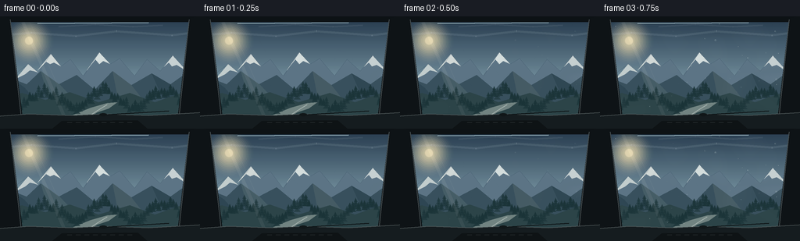
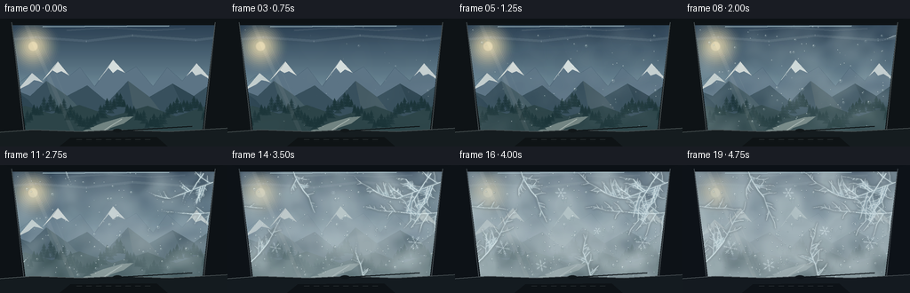

CODING AGENTS AS PIXEL WORLD MODELS
traex/GPT-5.6-Sol · phygen_114
点击播放 · 原生 RGB 像素
逐轮保存的候选
回放视频、检查图与代码变化。
每份候选均可单独播放。实际图片检查记录在下方工具轨迹中。
候选 01播放与检查图
点击播放 · 原生 RGB 像素


展开代码变化
--- 上一保存版本
+++ 本次保存版本
@@ -0,0 +1,271 @@
+from pathlib import Path
+import math, json
+import numpy as np
+from PIL import Image, ImageDraw, ImageFilter
+from scipy.ndimage import gaussian_filter
+import artifact_io
+
+CASE = Path(__file__).resolve().parent
+W,H,N = 256,144,20
+S=3
+WW,HH=W*S,H*S
+rng=np.random.default_rng(114)
+
+def lerp(a,b,t): return a+(b-a)*t
+def smooth(a,b,x):
+ x=np.clip((x-a)/(b-a),0,1)
+ return x*x*(3-2*x)
+
+def poly(draw, pts, fill): draw.polygon([(int(x*S),int(y*S)) for x,y in pts], fill=fill)
+def line(draw, pts, fill, width): draw.line([(int(x*S),int(y*S)) for x,y in pts], fill=fill, width=max(1,int(width*S)), joint='curve')
+def ellipse(draw, box, fill, outline=None, width=1):
+ b=tuple(int(v*S) for v in box); draw.ellipse(b,fill=fill,outline=outline,width=max(1,int(width*S)))
+
+def mountain_background():
+ im=Image.new('RGB',(WW,HH)); a=np.asarray(im).copy()
+ # cold pre-dawn gradient
+ top=np.array([34,53,72]); mid=np.array([112,139,153]); bot=np.array([171,180,178])
+ for y in range(HH):
+ yy=y/(HH-1)
+ if yy<.55: c=top*(1-yy/.55)+mid*(yy/.55)
+ else: c=mid*(1-(yy-.55)/.45)+bot*((yy-.55)/.45)
+ a[y,:,:]=c.astype(np.uint8)
+ im=Image.fromarray(a); d=ImageDraw.Draw(im,'RGBA')
+ # diffuse cold sun behind cloud
+ for r in range(32,1,-2):
+ alpha=int(1.8*(33-r)); ellipse(d,(37-r,31-r,37+r,31+r),(244,223,174,max(0,alpha)))
+ ellipse(d,(32,26,42,36),(239,224,183,165))
+ # high thin clouds
+ line(d,[(-10,25),(40,21),(97,25),(149,19),(220,24),(270,18)],(207,220,222,28),3.2)
+ line(d,[(75,13),(122,10),(170,13),(208,11)],(220,231,232,20),2)
+ # far mountain snow range
+ far=[(-8,91),(6,78),(19,81),(36,61),(49,72),(65,48),(78,64),(90,55),(106,76),(127,46),(141,61),(153,54),(172,76),(188,55),(205,70),(221,50),(239,70),(267,58),(267,110),(-8,110)]
+ poly(d,far,(93,116,132,255))
+ # snow fields on peaks
+ snow=[(20,80),(36,61),(49,72),(43,70),(38,69),(32,74)]
+ poly(d,snow,(209,217,216,235))
+ poly(d,[(48,69),(65,48),(78,64),(69,59),(64,61),(59,58)],(224,228,223,240))
+ poly(d,[(111,69),(127,46),(141,61),(132,57),(127,61),(122,55)],(224,230,228,245))
+ poly(d,[(209,65),(221,50),(239,70),(226,62),(220,64),(216,59)],(216,224,222,230))
+ # fine ridges
+ line(d,[(-5,91),(36,61),(49,72),(65,48),(78,64),(90,55),(106,76)],(49,72,91,150),.55)
+ line(d,[(107,76),(127,46),(141,61),(153,54),(172,76),(188,55),(205,70),(221,50),(239,70)],(49,72,91,160),.55)
+ # middle ridge layers
+ poly(d,[(-5,94),(16,80),(34,87),(52,70),(75,87),(98,75),(121,94),(144,70),(168,88),(194,73),(218,87),(242,70),(267,82),(267,121),(-5,121)],(55,78,91,255))
+ # shaded folds
+ poly(d,[(-5,94),(16,80),(31,91),(49,111),(-5,120)],(40,62,76,180))
+ poly(d,[(52,70),(76,87),(102,114),(62,103)],(76,97,105,170))
+ poly(d,[(144,70),(168,88),(186,111),(150,100)],(78,97,103,150))
+ poly(d,[(194,73),(218,87),(244,117),(208,104)],(42,64,75,175))
+ # valley floor
+ poly(d,[(-5,108),(28,98),(58,107),(89,97),(126,110),(166,98),(198,110),(232,98),(266,106),(266,140),(-5,140)],(42,65,69,255))
+ # frosted meadows / distant river
+ poly(d,[(79,144),(94,126),(116,117),(137,111),(150,110),(139,118),(124,123),(108,134),(102,144)],(151,164,158,170))
+ line(d,[(137,113),(124,121),(115,127),(108,137),(105,145)],(203,211,203,145),1.25)
+ # Pine trees silhouettes on lower ridges
+ rr=np.random.default_rng(6)
+ for x in np.linspace(-3,263,72):
+ base=110+10*math.sin(x*.082)+rr.uniform(-4,4)
+ ht=rr.uniform(6,15)
+ col=(24,48,51,rr.integers(145,225).item())
+ line(d,[(x,base),(x,base-ht)],col,.55)
+ for yy in np.linspace(base-ht*.76,base-1,4):
+ half=(yy-(base-ht))*0.16+1.0
+ poly(d,[(x,yy-3),(x-half*1.5,yy+2),(x+half*1.5,yy+2)],col)
+ # foreground roadside trees at extremes
+ for x,base,ht in [(-1,138,31),(8,139,23),(248,139,25),(258,138,36)]:
+ line(d,[(x,base),(x,base-ht)],(13,29,32,255),1.2)
+ for yy in np.arange(base-ht+5,base-2,4):
+ half=(yy-(base-ht))*.20+2.5
+ poly(d,[(x,yy-7),(x-half,yy+2),(x+half,yy+2)],(15,38,39,245))
+ return im
+
+BG=mountain_background()
+
+# Coherent fields for atmospheric fog; independent scales.
+def field(seed, sigma):
+ r=np.random.default_rng(seed).normal(size=(H,W))
+ r=gaussian_filter(r,sigma,mode='wrap'); r=(r-r.mean())/(r.std()+1e-6)
+ return r
+fog1=field(41,11); fog2=field(9,5); fog3=field(72,18)
+Y,X=np.mgrid[0:H,0:W]
+
+# persistent condensation droplet inventory
+rd=np.random.default_rng(199)
+drops=[]
+for i in range(245):
+ # mostly on glass, weighted toward incoming (right/top) fog
+ x=rd.uniform(17,239); y=rd.uniform(7,127)
+ edge=min(x-17,239-x,y-7,127-y)
+ bias=.48*(x/W)+.26*(1-y/H)+.26*np.exp(-edge/12)
+ born=np.clip(rd.uniform(.12,.91)-.20*bias,0.06,.91)
+ rad=rd.choice([.42,.55,.7,.9,1.15,1.5,2.0],p=[.13,.17,.22,.2,.14,.09,.05])*rd.uniform(.8,1.2)
+ drops.append((x,y,born,rad,rd.uniform(0,6.28)))
+
+# Frost branches as individual growing segments. Recursive deterministic trees.
+segments=[]
+def frost_tree(x,y,ang,length,depth,start,seed):
+ rr=np.random.default_rng(seed)
+ if depth<=0 or length<2: return
+ # curved-ish trunk split into segments, each with staggered emergence
+ parts=max(2,int(length/3.0)); px,py=x,y
+ bend=rr.normal(0,.045)
+ for k in range(parts):
+ aa=ang+bend*k+rr.normal(0,.025)
+ step=length/parts
+ nx=px+math.cos(aa)*step; ny=py+math.sin(aa)*step
+ segments.append((px,py,nx,ny,start+k*.012, max(.34,.55+depth*.12), depth))
+ # needle-like side branch at some joints
+ if k>0 and depth>1 and rr.random()<.62:
+ side=aa+rr.choice([-1,1])*rr.uniform(.65,1.12)
+ frost_tree(px,py,side,length*rr.uniform(.24,.39),depth-1,start+k*.012+.035,seed*37+k+13)
+ px,py=nx,ny
+ if depth>1:
+ frost_tree(px,py,ang+rr.uniform(-.5,.5),length*.58,depth-1,start+.11,seed+1009)
+
+# Seeds around edges: dominant right edge where fog first arrives, then corners.
+frost_tree(240,19,2.78,52,5,.34,12)
+frost_tree(239,53,2.98,44,4,.39,23)
+frost_tree(229,9,2.15,38,4,.43,34)
+frost_tree(17,117,-.67,45,4,.47,45)
+frost_tree(74,7,1.20,34,4,.50,56)
+frost_tree(153,128,-1.73,31,4,.56,67)
+frost_tree(19,46,.18,25,3,.61,78)
+# isolated crystal nucleation sites appear late
+crystals=[(211,87,.55,8.0,.1),(188,31,.59,6.5,.45),(54,93,.63,8.5,.2),(119,31,.67,6,.0),(97,113,.71,7,.35),(160,74,.74,5.5,.15)]
+
+def add_fog(im,t):
+ a=np.asarray(im).astype(np.float32)
+ # roll fields to imply fast timelapse inflow from right
+ f=np.roll(fog1,int(-t*31),axis=1)*.68+np.roll(fog2,int(t*18),axis=1)*.27+fog3*.25
+ # bank initially hugs valley/right, then climbs and fills view
+ front=205-245*t + 14*np.sin(Y*.105+1.1)
+ advance=1/(1+np.exp((X-front)/-10.0)) # high to right of moving front
+ valley=np.exp(-((Y-(103-17*t))/29)**2)
+ veil=smooth(.16,.96,t)
+ density=np.clip((f+.35)*.17 + advance*(.10+.42*veil) + valley*(.08+.27*veil),0,.83)
+ # preserve clarity at first frame
+ density*=smooth(.02,.93,t)
+ density=np.asarray(Image.fromarray(density.astype(np.float32),mode='F').resize((WW,HH),Image.Resampling.BICUBIC))
+ fogcol=np.zeros_like(a); fogcol[:]=[184,199,200]
+ a=a*(1-density[...,None])+fogcol*density[...,None]
+ # broad moving wisps, visibly crossing mountain faces
+ pil=Image.fromarray(np.uint8(np.clip(a,0,255))).convert('RGBA')
+ d=ImageDraw.Draw(pil,'RGBA')
+ for j in range(5):
+ cx=285-270*t+j*42
+ cy=77+j*10+4*math.sin(t*5+j)
+ rx=50+j*3; ry=9+j*1.4
+ alpha=int(10+18*veil)
+ ellipse(d,(cx-rx,cy-ry,cx+rx,cy+ry),(225,232,229,alpha))
+ return pil.convert('RGB')
+
+def glass_effects(im,t):
+ base=im.convert('RGBA')
+ # blue glass cast and soft internal reflections
+ cast=Image.new('RGBA',(WW,HH),(0,0,0,0)); cd=ImageDraw.Draw(cast,'RGBA')
+ poly(cd,[(15,4),(241,4),(247,130),(9,130)],(80,127,148,11))
+ line(cd,[(29,7),(82,128)],(226,238,235,18),4.8)
+ line(cd,[(38,7),(91,128)],(226,238,235,9),1.3)
+ base=Image.alpha_composite(base,cast)
+ # condensation haze on glass increasing, mottled and clearly foreground
+ q=smooth(.12,.74,t)
+ haze=np.zeros((H,W,4),dtype=np.uint8)
+ hfield=np.roll(fog2,int(t*9),axis=0)
+ alpha=np.uint8(np.clip((hfield+1.15)*17*q,0,37))
+ inside=(X>12+(Y*.025))&(X<244-(Y*.025))&(Y<130)&(Y>4)
+ haze[:,:,0]=205; haze[:,:,1]=221; haze[:,:,2]=222; haze[:,:,3]=alpha*inside
+ him=Image.fromarray(haze,'RGBA').resize((WW,HH),Image.Resampling.BILINEAR).filter(ImageFilter.GaussianBlur(2.4*S))
+ base=Image.alpha_composite(base,him)
+ # water droplets, with shadows, translucent lens center and bright crescent
+ dl=Image.new('RGBA',(WW,HH),(0,0,0,0)); dd=ImageDraw.Draw(dl,'RGBA')
+ for x,y,born,r,phase in drops:
+ life=smooth(born,min(.99,born+.16),t)
+ if life<=0: continue
+ rr=r*(.55+.45*life)
+ # occasional short gravity tail in larger condensed drops
+ if rr>1.25 and t>born+.12:
+ tail=min(4.5,(t-born)*7)*rr/2
+ line(dd,[(x+.35,y+rr*.7),(x+.25,y+rr+tail)],(66,91,99,int(32*life)),max(.35,rr*.28))
+ ellipse(dd,(x-rr-.25,y-rr-.1,x+rr+.25,y+rr+.4),(88,112,119,int(42*life)))
+ ellipse(dd,(x-rr+.18,y-rr+.15,x+rr-.1,y+rr-.2),(185,207,207,int(50*life)))
+ ellipse(dd,(x-rr*.50,y-rr*.58,x-rr*.05,y-rr*.14),(244,250,246,int(180*life)))
+ # tiny dark refraction edge on lower-right
+ if rr>.7: line(dd,[(x+rr*.45,y-rr*.05),(x+rr*.28,y+rr*.48)],(53,76,84,int(70*life)),.32)
+ base=Image.alpha_composite(base,dl)
+ # frost glow and sharp crystalline branches
+ glow=Image.new('RGBA',(WW,HH),(0,0,0,0)); gd=ImageDraw.Draw(glow,'RGBA')
+ sharp=Image.new('RGBA',(WW,HH),(0,0,0,0)); sd=ImageDraw.Draw(sharp,'RGBA')
+ for x1,y1,x2,y2,born,wid,dep in segments:
+ life=smooth(born,born+.095,t)
+ if life<=0: continue
+ ex=x1+(x2-x1)*life; ey=y1+(y2-y1)*life
+ line(gd,[(x1,y1),(ex,ey)],(206,234,239,int(100*life)),wid*2.8)
+ line(sd,[(x1,y1),(ex,ey)],(229,247,248,int((135+18*dep)*life)),wid)
+ # tiny highlight offset gives ice facets depth
+ line(sd,[(x1-.18,y1-.18),(ex-.18,ey-.18)],(255,255,250,int(90*life)),max(.22,wid*.32))
+ glow=glow.filter(ImageFilter.GaussianBlur(1.15*S))
+ base=Image.alpha_composite(base,glow); base=Image.alpha_composite(base,sharp)
+ # radial six-fold ice crystals
+ cry=Image.new('RGBA',(WW,HH),(0,0,0,0)); c=ImageDraw.Draw(cry,'RGBA')
+ for cx,cy,born,rad,rot in crystals:
+ life=smooth(born,born+.16,t)
+ if life<=0: continue
+ R=rad*life
+ for k in range(6):
+ aa=rot+k*math.pi/3
+ ex=cx+math.cos(aa)*R; ey=cy+math.sin(aa)*R
+ line(c,[(cx,cy),(ex,ey)],(238,252,252,int(205*life)),.55)
+ for frac in (.45,.68):
+ bx=cx+math.cos(aa)*R*frac; by=cy+math.sin(aa)*R*frac
+ for sgn in (-1,1):
+ ba=aa+sgn*.68
+ line(c,[(bx,by),(bx+math.cos(ba)*R*.23,by+math.sin(ba)*R*.23)],(231,249,251,int(180*life)),.4)
+ base=Image.alpha_composite(base,cry)
+ return base.convert('RGB')
+
+def car_interior(im,t):
+ out=im.convert('RGBA'); d=ImageDraw.Draw(out,'RGBA')
+ # black windshield border and A-pillars establish interior viewpoint
+ poly(d,[(-2,-2),(258,-2),(248,7),(10,7)],(13,18,21,255))
+ poly(d,[(-3,-2),(13,3),(29,132),(-4,145)],(14,19,22,255))
+ poly(d,[(259,-2),(242,3),(227,133),(260,145)],(14,19,22,255))
+ # rubber seals catching dim light
+ line(d,[(13,4),(27,129)],(66,75,78,180),1.2)
+ line(d,[(242,4),(229,129)],(69,77,79,180),1.2)
+ # dashboard with curved upper lip
+ poly(d,[(-4,128),(37,125),(92,127),(133,125),(190,127),(260,123),(260,147),(-4,147)],(21,28,31,255))
+ line(d,[(-4,128),(37,125),(92,127),(133,125),(190,127),(260,123)],(81,90,91,185),1.2)
+ poly(d,[(79,134),(176,133),(191,146),(64,146)],(14,19,21,220))
+ # defroster vents
+ for x in range(86,174,11): line(d,[(x,136),(x+6,136)],(72,79,79,200),.55)
+ # base of wiper outside, static in timelapse
+ line(d,[(133,126),(216,121)],(13,19,21,220),1.6)
+ ellipse(d,(127,124,137,128),(17,23,25,230))
+ # mild cold reflection along upper glass
+ line(d,[(48,9),(190,8)],(184,210,215,18),1)
+ return out.convert('RGB')
+
+frames=[]
+for i in range(N):
+ t=i/(N-1)
+ # eased timelapse progression retains a clear establishing first second
+ im=add_fog(BG.copy(),t)
+ im=glass_effects(im,t)
+ im=car_interior(im,t)
+ # subtle exposure fall as fog envelops vehicle
+ arr=np.asarray(im).astype(np.float32)
+ arr*=1-.045*smooth(.5,1,t)
+ # slight cool-up as cold glass ices over
+ arr[:,:,2]+=3*smooth(.35,1,t)
+ frames.append(np.uint8(np.clip(arr,0,255)))
+
+frames=np.stack(frames)
+assert frames.shape==(N,H*S,W*S,3)
+# downsample only once for crisp anti-aliased detail
+small=[]
+for f in frames:
+ small.append(np.asarray(Image.fromarray(f).resize((W,H),Image.Resampling.LANCZOS)))
+frames=np.stack(small).astype(np.uint8)
+artifact_io.save(frames,CASE)
+print('saved',frames.shape,frames.dtype,'range',frames.min(),frames.max())
候选 02播放与检查图
点击播放 · 原生 RGB 像素


展开代码变化
--- 上一保存版本
+++ 本次保存版本
@@ -151,14 +151,16 @@
a=a*(1-density[...,None])+fogcol*density[...,None]
# broad moving wisps, visibly crossing mountain faces
pil=Image.fromarray(np.uint8(np.clip(a,0,255))).convert('RGBA')
- d=ImageDraw.Draw(pil,'RGBA')
+ wisps=Image.new('RGBA',(WW,HH),(0,0,0,0))
+ d=ImageDraw.Draw(wisps,'RGBA')
for j in range(5):
cx=285-270*t+j*42
cy=77+j*10+4*math.sin(t*5+j)
rx=50+j*3; ry=9+j*1.4
alpha=int(10+18*veil)
ellipse(d,(cx-rx,cy-ry,cx+rx,cy+ry),(225,232,229,alpha))
- return pil.convert('RGB')
+ wisps=wisps.filter(ImageFilter.GaussianBlur(5.5*S))
+ return Image.alpha_composite(pil,wisps).convert('RGB')
def glass_effects(im,t):
base=im.convert('RGBA')
可观测工具轨迹
实际执行的命令与返回图片。
命令 1exit 0
/bin/bash -lc "cat prompt.txt && printf '\\n--- GENERATION_RULES ---\\n' && cat GENERATION_RULES.md"
命令 2exit 0
/bin/bash -lc "cat task_spec.json && printf '\\n--- FILES ---\\n' && find . -maxdepth 2 -type f -printf '%p %s bytes\\n' | sort"
命令 3exit 0
/bin/bash -lc "sed -n '1,240p' artifact_io.py"
命令 4exit 0
/bin/bash -lc "python - <<'PY' import importlib.util for m in ['numpy','PIL','cv2','imageio','scipy']: print(m, bool(importlib.util.find_spec(m))) PY ffmpeg -version | head -2 || true"
命令 5exit 2
/bin/bash -lc "cat > generate.py <<'PY'
from pathlib import Path
import math, json
import numpy as np
from PIL import Image, ImageDraw, ImageFilter
from scipy.ndimage import gaussian_filter
import artifact_io
CASE = Path(__file__).resolve().parent
W,H,N = 256,144,20
S=3
WW,HH=W*S,H*S
rng=np.random.default_rng(114)
def lerp(a,b,t): return a+(b-a)*t
def smooth(a,b,x):
x=np.clip((x-a)/(b-a),0,1)
return x*x*(3-2*x)
def poly(draw, pts, fill): draw.polygon([(int(x*S),int(y*S)) for x,y in pts], fill=fill)
def line(draw, pts, fill, width): draw.line([(int(x*S),int(y*S)) for x,y in pts], fill=fill, width=max(1,int(width*S)), joint='curve')
def ellipse(draw, box, fill, outline=None, width=1):
b=tuple(int(v*S) for v in box); draw.ellipse(b,fill=fill,outline=outline,width=max(1,int(width*S)))
def mountain_background():
im=Image.new('RGB',(WW,HH)); a=np.asarray(im).copy()
# cold pre-dawn gradient
top=np.array([34,53,72]); mid=np.array([112,139,153]); bot=np.array([171,180,178])
for y in range(HH):
yy=y/(HH-1)
if yy<.55: c=top*(1-yy/.55)+mid*(yy/.55)
else: c=mid*(1-(yy-.55)/.45)+bot*((yy-.55)/.45)
a[y,:,:]=c.astype(np.uint8)
im=Image.fromarray(a); d=ImageDraw.Draw(im,'RGBA')
# diffuse cold sun behind cloud
for r in range(32,1,-2):
alpha=int(1.8*(33-r)); ellipse(d,(37-r,31-r,37+r,31+r),(244,223,174,max(0,alpha)))
ellipse(d,(32,26,42,36),(239,224,183,165))
# high thin clouds
line(d,[(-10,25),(40,21),(97,25),(149,19),(220,24),(270,18)],(207,220,222,28),3.2)
line(d,[(75,13),(122,10),(170,13),(208,11)],(220,231,232,20),2)
# far mountain snow range
far=[(-8,91),(6,78),(19,81),(36,61),(49,72),(65,48),(78,64),(90,55),(106,76),(127,46),(141,61),(153,54),(172,76),(188,55),(205,70),(221,50),(239,70),(267,58),(267,110),(-8,110)]
poly(d,far,(93,116,132,255))
# snow fields on peaks
snow=[(20,80),(36,61),(49,72),(43,70),(38,69),(32,74)]
poly(d,snow,(209,217,216,235))
poly(d,[(48,69),(65,48),(78,64),(69,59),(64,61),(59,58)],(224,228,223,240))
poly(d,[(111,69),(127,46),(141,61),(132,57),(127,61),(122,55)],(224,230,228,245))
poly(d,[(209,65),(221,50),(239,70),(226,62),(220,64),(216,59)],(216,224,222,230))
# fine ridges
line(d,[(-5,91),(36,61),(49,72),(65,48),(78,64),(90,55),(106,76)],(49,72,91,150),.55)
line(d,[(107,76),(127,46),(141,61),(153,54),(172,76),(188,55),(205,70),(221,50),(239,70)],(49,72,91,160),.55)
# middle ridge layers
poly(d,[(-5,94),(16,80),(34,87),(52,70),(75,87),(98,75),(121,94),(144,70),(168,88),(194,73),(218,87),(242,70),(267,82),(267,121),(-5,121)],(55,78,91,255))
# shaded folds
poly(d,[(-5,94),(16,80),(31,91),(49,111),(-5,120)],(40,62,76,180))
poly(d,[(52,70),(76,87),(102,114),(62,103)],(76,97,105,170))
poly(d,[(144,70),(168,88),(186,111),(150,100)],(78,97,103,150))
poly(d,[(194,73),(218,87),(244,117),(208,104)],(42,64,75,175))
# valley floor
poly(d,[(-5,108),(28,98),(58,107),(89,97),(126,110),(166,98),(198,110),(232,98),(266,106),(266,140),(-5,140)],(42,65,69,255))
# frosted meadows / distant river
poly(d,[(79,144),(94,126),(116,117),(137,111),(150,110),(139,118),(124,123),(108,134),(102,144)],(151,164,158,170))
line(d,[(137,113),(124,121),(115,127),(108,137),(105,145)],(203,211,203,145),1.25)
# Pine trees silhouettes on lower ridges
rr=np.random.default_rng(6)
for x in np.linspace(-3,263,72):
base=110+10*math.sin(x*.082)+rr.uniform(-4,4)
ht=rr.uniform(6,15)
col=(24,48,51,rr.integers(145,225).item())
line(d,[(x,base),(x,base-ht)],col,.55)
for yy in np.linspace(base-ht*.76,base-1,4):
half=(yy-(base-ht))*0.16+1.0
poly(d,[(x,yy-3),(x-half*1.5,yy+2),(x+half*1.5,yy+2)],col)
# foreground roadside trees at extremes
for x,base,ht in [(-1,138,31),(8,139,23),(248,139,25),(258,138,36)]:
line(d,[(x,base),(x,base-ht)],(13,29,32,255),1.2)
for yy in np.arange(base-ht+5,base-2,4):
half=(yy-(base-ht))*.20+2.5
poly(d,[(x,yy-7),(x-half,yy+2),(x+half,yy+2)],(15,38,39,245))
return im
BG=mountain_background()
# Coherent fields for atmospheric fog; independent scales.
def field(seed, sigma):
r=np.random.default_rng(seed).normal(size=(H,W))
r=gaussian_filter(r,sigma,mode='wrap'); r=(r-r.mean())/(r.std()+1e-6)
return r
fog1=field(41,11); fog2=field(9,5); fog3=field(72,18)
Y,X=np.mgrid[0:H,0:W]
# persistent condensation droplet inventory
rd=np.random.default_rng(199)
drops=[]
for i in range(245):
# mostly on glass, weighted toward incoming (right/top) fog
x=rd.uniform(17,239); y=rd.uniform(7,127)
edge=min(x-17,239-x,y-7,127-y)
bias=.48*(x/W)+.26*(1-y/H)+.26*np.exp(-edge/12)
born=np.clip(rd.uniform(.12,.91)-.20*bias,0.06,.91)
rad=rd.choice([.42,.55,.7,.9,1.15,1.5,2.0],p=[.13,.17,.22,.2,.14,.09,.05])*rd.uniform(.8,1.2)
drops.append((x,y,born,rad,rd.uniform(0,6.28)))
# Frost branches as individual growing segments. Recursive deterministic trees.
segments=[]
def frost_tree(x,y,ang,length,depth,start,seed):
rr=np.random.default_rng(seed)
if depth<=0 or length<2: return
# curved-ish trunk split into segments, each with staggered emergence
parts=max(2,int(length/3.0)); px,py=x,y
bend=rr.normal(0,.045)
for k in range(parts):
aa=ang+bend*k+rr.normal(0,.025)
step=length/parts
nx=px+math.cos(aa)*step; ny=py+math.sin(aa)*step
segments.append((px,py,nx,ny,start+k*.012, max(.34,.55+depth*.12), depth))
# needle-like side branch at some joints
if k>0 and depth>1 and rr.random()<.62:
side=aa+rr.choice([-1,1])*rr.uniform(.65,1.12)
frost_tree(px,py,side,length*rr.uniform(.24,.39),depth-1,start+k*.012+.035,seed*37+k+13)
px,py=nx,ny
if depth>1:
frost_tree(px,py,ang+rr.uniform(-.5,.5),length*.58,depth-1,start+.11,seed+1009)
# Seeds around edges: dominant right edge where fog first arrives, then corners.
frost_tree(240,19,2.78,52,5,.34,12)
frost_tree(239,53,2.98,44,4,.39,23)
frost_tree(229,9,2.15,38,4,.43,34)
frost_tree(17,117,-.67,45,4,.47,45)
frost_tree(74,7,1.20,34,4,.50,56)
frost_tree(153,128,-1.73,31,4,.56,67)
frost_tree(19,46,.18,25,3,.61,78)
# isolated crystal nucleation sites appear late
crystals=[(211,87,.55,8.0,.1),(188,31,.59,6.5,.45),(54,93,.63,8.5,.2),(119,31,.67,6,.0),(97,113,.71,7,.35),(160,74,.74,5.5,.15)]
def add_fog(im,t):
a=np.asarray(im).astype(np.float32)
# roll fields to imply fast timelapse inflow from right
f=np.roll(fog1,int(-t*31),axis=1)*.68+np.roll(fog2,int(t*18),axis=1)*.27+fog3*.25
# bank initially hugs valley/right, then climbs and fills view
front=205-245*t + 14*np.sin(Y*.105+1.1)
advance=1/(1+np.exp((X-front)/-10.0)) # high to right of moving front
valley=np.exp(-((Y-(103-17*t))/29)**2)
veil=smooth(.16,.96,t)
density=np.clip((f+.35)*.17 + advance*(.10+.42*veil) + valley*(.08+.27*veil),0,.83)
# preserve clarity at first frame
density*=smooth(.02,.93,t)
fogcol=np.zeros_like(a); fogcol[:]=[184,199,200]
a=a*(1-density[...,None])+fogcol*density[...,None]
# broad moving wisps, visibly crossing mountain faces
pil=Image.fromarray(np.uint8(np.clip(a,0,255))).convert('RGBA')
d=ImageDraw.Draw(pil,'RGBA')
for j in range(5):
cx=285-270*t+j*42
cy=77+j*10+4*math.sin(t*5+j)
rx=50+j*3; ry=9+j*1.4
alpha=int(10+18*veil)
ellipse(d,(cx-rx,cy-ry,cx+rx,cy+ry),(225,232,229,alpha))
return pil.convert('RGB')
def glass_effects(im,t):
base=im.convert('RGBA')
# blue glass cast and soft internal reflections
cast=Image.new('RGBA',(WW,HH),(0,0,0,0)); cd=ImageDraw.Draw(cast,'RGBA')
poly(cd,[(15,4),(241,4),(247,130),(9,130)],(80,127,148,11))
line(cd,[(29,7),(82,128)],(226,238,235,18),4.8)
line(cd,[(38,7),(91,128)],(226,238,235,9),1.3)
base=Image.alpha_composite(base,cast)
# condensation haze on glass increasing, mottled and clearly foreground
q=smooth(.12,.74,t)
haze=np.zeros((H,W,4),dtype=np.uint8)
hfield=np.roll(fog2,int(t*9),axis=0)
alpha=np.uint8(np.clip((hfield+1.15)*17*q,0,37))
inside=(X>12+(Y*.025))&(X<244-(Y*.025))&(Y<130)&(Y>4)
haze[:,:,0]=205; haze[:,:,1]=221; haze[:,:,2]=222; haze[:,:,3]=alpha*inside
him=Image.fromarray(haze,'RGBA').resize((WW,HH),Image.Resampling.BILINEAR).filter(ImageFilter.GaussianBlur(2.4*S))
base=Image.alpha_composite(base,him)
# water droplets, with shadows, translucent lens center and bright crescent
dl=Image.new('RGBA',(WW,HH),(0,0,0,0)); dd=ImageDraw.Draw(dl,'RGBA')
for x,y,born,r,phase in drops:
life=smooth(born,min(.99,born+.16),t)
if life<=0: continue
rr=r*(.55+.45*life)
# occasional short gravity tail in larger condensed drops
if rr>1.25 and t>born+.12:
tail=min(4.5,(t-born)*7)*rr/2
line(dd,[(x+.35,y+rr*.7),(x+.25,y+rr+tail)],(66,91,99,int(32*life)),max(.35,rr*.28))
ellipse(dd,(x-rr-.25,y-rr-.1,x+rr+.25,y+rr+.4),(88,112,119,int(42*life)))
ellipse(dd,(x-rr+.18,y-rr+.15,x+rr-.1,y+rr-.2),(185,207,207,int(50*life)))
ellipse(dd,(x-rr*.50,y-rr*.58,x-rr*.05,y-rr*.14),(244,250,246,int(180*life)))
# tiny dark refraction edge on lower-right
if rr>.7: line(dd,[(x+rr*.45,y-rr*.05),(x+rr*.28,y+rr*.48)],(53,76,84,int(70*life)),.32)
base=Image.alpha_composite(base,dl)
# frost glow and sharp crystalline branches
glow=Image.new('RGBA',(WW,HH),(0,0,0,0)); gd=ImageDraw.Draw(glow,'RGBA')
sharp=Image.new('RGBA',(WW,HH),(0,0,0,0)); sd=ImageDraw.Draw(sharp,'RGBA')
for x1,y1,x2,y2,born,wid,dep in segments:
life=smooth(born,born+.095,t)
if life<=0: continue
ex=x1+(x2-x1)*life; ey=y1+(y2-y1)*life
line(gd,[(x1,y1),(ex,ey)],(206,234,239,int(100*life)),wid*2.8)
line(sd,[(x1,y1),(ex,ey)],(229,247,248,int((135+18*dep)*life)),wid)
# tiny highlight offset gives ice facets depth
line(sd,[(x1-.18,y1-.18),(ex-.18,ey-.18)],(255,255,250,int(90*life)),max(.22,wid*.32))
glow=glow.filter(ImageFilter.GaussianBlur(1.15*S))
base=Image.alpha_composite(base,glow); base=Image.alpha_composite(base,sharp)
# radial six-fold ice crystals
cry=Image.new('RGBA',(WW,HH),(0,0,0,0)); c=ImageDraw.Draw(cry,'RGBA')
for cx,cy,born,rad,rot in crystals:
life=smooth(born,born+.16,t)
if life<=0: continue
R=rad*life
for k in range(6):
aa=rot+k*math.pi/3
ex=cx+math.cos(aa)*R; ey=cy+math.sin(aa)*R
line(c,[(cx,cy),(ex,ey)],(238,252,252,int(205*life)),.55)
for frac in (.45,.68):
bx=cx+math.cos(aa)*R*frac; by=cy+math.sin(aa)*R*frac
for sgn in (-1,1):
ba=aa+sgn*.68
line(c,[(bx,by),(bx+math.cos(ba)*R*.23,by+math.sin(ba)*R*.23)],(231,249,251,int(180*life)),.4)
base=Image.alpha_composite(base,cry)
return base.convert('RGB')
def car_interior(im,t):
out=im.convert('RGBA'); d=ImageDraw.Draw(out,'RGBA')
# black windshield border and A-pillars establish interior viewpoint
poly(d,[(-2,-2),(258,-2),(248,7),(10,7)],(13,18,21,255))
poly(d,[(-3,-2),(13,3),(29,132),(-4,145)],(14,19,22,255))
poly(d,[(259,-2),(242,3),(227,133),(260,145)],(14,19,22,255))
# rubber seals catching dim light
line(d,[(13,4),(27,129)],(66,75,78,180),1.2)
line(d,[(242,4),(229,129)],(69,77,79,180),1.2)
# dashboard with curved upper lip
poly(d,[(-4,128),(37,125),(92,127),(133,125),(190,127),(260,123),(260,147),(-4,147)],(21,28,31,255))
line(d,[(-4,128),(37,125),(92,127),(133,125),(190,127),(260,123)],(81,90,91,185),1.2)
poly(d,[(79,134),(176,133),(191,146),(64,146)],(14,19,21,220))
# defroster vents
for x in range(86,174,11): line(d,[(x,136),(x+6,136)],(72,79,79,200),.55)
# base of wiper outside, static in timelapse
line(d,[(133,126),(216,121)],(13,19,21,220),1.6)
ellipse(d,(127,124,137,128),(17,23,25,230))
# mild cold reflection along upper glass
line(d,[(48,9),(190,8)],(184,210,215,18),1)
return out.convert('RGB')
frames=[]
for i in range(N):
t=i/(N-1)
# eased timelapse progression retains a clear establishing first second
im=add_fog(BG.copy(),t)
im=glass_effects(im,t)
im=car_interior(im,t)
# subtle exposure fall as fog envelops vehicle
arr=np.asarray(im).astype(np.float32)
arr*=1-.045*smooth(.5,1,t)
# slight cool-up as cold glass ices over
arr[:,:,2]+=3*smooth(.35,1,t)
frames.append(np.uint8(np.clip(arr,0,255)))
frames=np.stack(frames)
assert frames.shape==(N,H*S,W*S,3)
# downsample only once for crisp anti-aliased detail
small=[]
for f in frames:
small.append(np.asarray(Image.fromarray(f).resize((W,H),Image.Resampling.LANCZOS)))
frames=np.stack(small).astype(np.uint8)
artifact_io.save(frames,CASE)
print('saved',frames.shape,frames.dtype,'range',frames.min(),frames.max())
PY
python generate.py
ls -lh pixels.npz inspection.png transition_check.png index.html frames/00.png frames/19.png"命令 6exit 0
/bin/bash -lc 'python generate.py && ls -lh pixels.npz inspection.png transition_check.png index.html frames/00.png frames/19.png'
命令 7exit 0
/bin/bash -lc "python generate.py && python - <<'PY'
from pathlib import Path
import json, numpy as np
from PIL import Image
p=Path('.')
s=json.loads((p/'task_spec.json').read_text())
z=np.load(p/'pixels.npz')['pixels']
files=sorted((p/'frames').glob('*.png'))
ims=[np.asarray(Image.open(f)) for f in files]
print('spec',s)
print('pixels tensor',z.shape,z.dtype,'frame_files',len(files))
print('frames',len(ims),ims[0].shape,ims[0].dtype)
print('mean_abs_adjacent_deltas',[round(float(np.abs(ims[i].astype(float)-ims[i-1]).mean()),2) for i in [1,5,10,15,19]])
print('first_last_delta',round(float(np.abs(ims[-1].astype(float)-ims[0]).mean()),2))
assert len(files)==20 and all(x.shape==(144,256,3) for x in ims)
assert z.shape==(144,256,20)
PY"视觉工具实际返回图片 1

视觉工具实际返回图片 2

保存候选 2 份；完成命令 7 次；可验证图片返回 2 张。原始 API 响应与完整日志保留在本地。